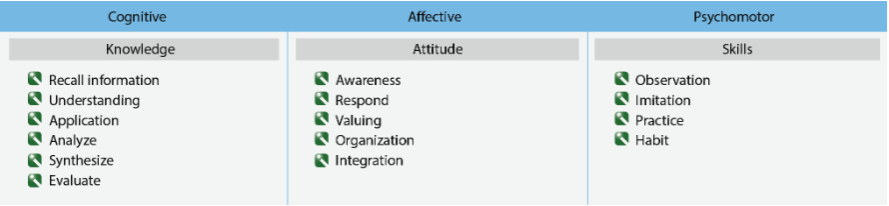
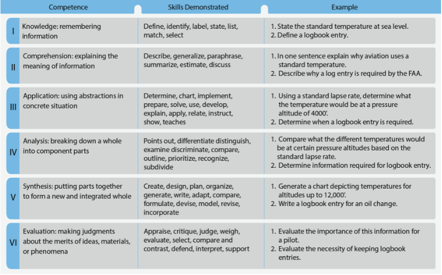

References:
Objective:
The learner should develop knowledge of the elements related to the learning process as required in the CFI Airplane ACS.
Elements:
- Definitions of Learning
- Learning Theory
- Perceptions and Insight
- Acquiring Knowledge
- Laws of Learning
- Domains of Learning
- Characteristics of Learning
- Acquiring Skill Knowledge
- Distractions & Interruptions, Fixation & Inattention
- Errors
- Memory
- Forgetting
- Retention of Learning
- Transfer of Learning
- Habit Formation
Completion Standards
The learner understands the learning process and can integrate the knowledge when instructing learners
Definitions of Learning
There are multiple definitions of learning, which tend to fall into categories including:
- A change of behavior
- A gaining of knowledge or skills
- A permanent change in understanding and cognition
Effective instructors understand the subject material, the learner, the learning process, and the relationship between them.
Learning
Learning is a complex process, and it is the responsibility of the instructor to assist each learner in reaching their goals while building self-esteem and confidence.
Learning Theory
Learning theory is a body of principles used to explain how people acquire skills, knowledge, and attitudes. It is typically explained by one of two concepts:
Instructors should plan, manage, and conduct aviation training with the best features of both theories. This provides a way to measure the behavioral outcomes and promote cognitive learning.
Behaviorism
Behaviorism explains behavior entirely in terms of observable and measurable responses to stimuli. In other words, human behavior can be predicted based on past rewards and punishments.
In modern behaviorism, positive reinforcement is stressed, to encourage progress and learning with rewards.
The popularity of behaviorism as a learning theory has waned as more is understood about the complexity of the learning process.
Cognitive Theory:
Cognitive Theory focuses on what is going on in the mind. Learning isn’t just a behavior change, it is a change in the way a learner thinks, understands, and feels.
Cognitive Theory has 2 major branches:
Information Processing Theory
Information Processing Theory uses the concept of a computer system to model the actions of the brain. The brain processes incoming information, stores and retrieves it, and generates responses to the information. This involves a number of cognitive processes:
- Gathering and representing information (encoding)
- Retaining of information
- Retrieving the information when needed
Constructivism
Constructivism is the concept that learners do not acquire knowledge and skills passively but actively build or construct them based on their experiences. In this theory, learning is the result of matching new information against preexisting information and integrating it into meaningful connections.
Constructivism also encompasses Higher Order Thinking Skills from Bloom’s Taxonomy and Scenario Based Training, also referred to as Aeronautical Decision Making (ADM)
- An important common thread in aviation accidents is the absence of HOTS
Higher Order Thinking Skills
Teaching HOTS effectively helps engage the learner in mental activity, has the learner examine that mental activity and select the best solution, and challenges the learner to explore other ways to accomplish the task. HOTS should be taught like other cognitive skills, from simple to complex, from concrete to abstract. This involves:
- Problem-based instruction
- Authentic / real world problems
- Active learning / Cooperative learning
- Customized instruction to meet the individual learner’s needs
Scenario Based Training
Scenario Based Training (SBT) is the heart of HOTS and ADM, and is an example of Problem Based Learning (PBL). It uses real world scenarios to address flight training objectives, and should generally be planned and led by the learner.
Perceptions and Insight
Initially, all learning comes from perceptions (which come from the senses), and the learner gives meaning to the senses. New learners are typically overwhelmed by stimuli, and often focus on the wrong thing, so the instructor needs to make sure that they direct the learner’s perceptions so that they obtain the relevant information
Factors that Affect Perceptions:
Physical Organism
The pilot’s body (perceptual apparatus), used for sensing the world around them
Goals and Values
Experiences are affected by the individuals values and beliefs.
- Important to understand the learner’s values and tailor teaching to those values
Self-Concept or Self-Image
Positive Self-Concept
Allows the learner to remain open to new experiences. They are less defensive and more receptive to new experiences, instructions, and demonstrations.
Negative Self-Concept
Has a negative effect on learning by introducing psychological barriers, which tend to prevent the learner from perceiving, and may inhibit the ability to properly implement what is perceived.
Time and Opportunity
Proper sequence and time are necessary for learning
Element of Threat
Threat does not promote effective learning
- Fear adversely affects perception by narrowing the perceptual field
Insight
Insight is the grouping of perceptions into meaningful wholes, and it is one of the primary responsibilities of the instructor to help the learner understand how each piece of information relates to the others. Insight is the “Aha!” moment when the information clicks.
Acquiring Knowledge
Part of an instructor’s job is helping learners acquire knowledge. There are phases of knowledge and knowledge acquisition that the learner progresses through.
Memorization
Memorization is the the first attempt to acquire knowledge. Good for rote repetition, but not good for problem solving.
Understanding
Understanding is the ability to notice similarities and make associations between the facts and procedural steps learned. This is when the learner begins to organize known facts and steps into coherent groups to form an understanding of how a thing or process works.
Once the learner begins to reach the understanding phase of knowledge, there are several advantages:
- Learner is no longer limited to only answering questions that match the memorized facts.
- Learners who understand a process have an easier time mastering variations of the process.
- Understanding shared between people allows for more effective and efficient communication.
- Learners who understand the purpose behind procedure steps are better able to remember the procedure steps later, or reconstruct them when they are forgotten.
Concept Learning
Concept Learning is based on the assumption that humans tend to group objects/ideas/people/etc. that share one or more major attributes. By grouping information into concepts and schemas, we create manageable categories.
Laws of Learning
The laws of learning (REEPIR) help provide insight into what makes people learn most effectively.
Readiness
The basic needs of the learner need to be met before they are ready or capable of learning. The instructor can do little to motivate the learner if these needs haven’t been met.
Learners best acquire new knowledge when they see a clear reason for doing so. Provide useful, applicable information tailored to the specific learner’s experience level
There are two steps to keep learners in a state of readiness:
- Communicate a clear set of objectives and relate each new topic to the objectives
- Introduce topics in a logical order and leave learners with a need to learn the next topic
Be alert to and capitalize on teachable moments
Effect
Behaviors that lead to satisfying outcomes are likely to be repeated and vice versa. Learning should affect the learner positively and give them a feeling of satisfaction.
- It is important as an instructor to create situations designed to promote success.
Exercise
Connections are strengthened with practice and weakened without it
- Use it or lose it
Exercise is most meaningful and effective when a skill is learned in the context of real world applications. Opportunities should be provided for practice, ensuring that it is directed towards a goal and performed properly.
Primacy
What is learned first often creates a strong, almost unshakable impression. Unteaching is much more difficult than teaching.
- The first experience should be positive, functional, and lay the foundation for all that is to follow.
Intensity
A vivid, dramatic, or exciting learning experience teaches more than a routine or boring one.
- Instructional aides can improve realism, motivate learning, and challenge learners.
Recency
Things most recently learned are best remembered. The further removed in time from a new fact/understanding, the more difficult it is to remember.
- Repeat, restate, or reemphasize important points at the end of a lesson to help in remembering
Domains of Learning
The Domains of Learning are a framework to help understand the major areas of learning and thinking. They are:

Cognitive Domain
The cognitive domain is one of the best known educational domain. It includes remembering specific facts and concepts that help develop intellectual abilities and skills.
Levels of the Cognitive Domain
1. Knowledge
Remembering information
2. Comprehension
Explaining the meaning of information
3. Application
Using abstractions in concrete situations
4. Analysis
Breaking down a whole into component parts
5. Synthesis
Putting parts together to form a new and integrated whole
6. Evaluation
Making judgements about the merits of ideas, materials, or phenomena
Practical Learning Levels
There are 4 practical levels of learning, which are often categorized in the Cognitive Domain. They are:
Rote:
The ability to repeat without understanding or application
Understanding:
Insight into what has been taught
Application:
Skill for applying what has been learned
Correlation:
Correlation of what has been learned with things previously learned and subsequently encountered
- This is the objective in aviation instruction

Affective Domain
The affective domain addresses a learner’s emotions towards the educational experience. It includes values, enthusiasms, motivations, and attitudes. Measuring objectives in this domain is difficult.
The affective domain provides a framework for teaching in 5 levels:
1. Receiving
Willingness to pay attention
2. Responding
Reacts voluntarily or Complies
3. Valuing
Acceptance
4. Organization
Rearrangement of value system
5. Characterization
Incorporates value into life
Psychomotor Domain
The psychomotor domain is skill based and includes physical movement, coordination, and the use of motor-skill areas. As tasks/equipment get more complex, the necessity for integration of cognitive and physical skills increases.
There are 4 practical instructional levels for the psychomotor domain:
1. Observation
2. Imitation
3. Practice
4. Habit
Characteristics of Learning
To understand how people learn, it is necessary to understand what happens to the individual during the process. Knowledge of the general characteristics of learning help an aviation instructor use those characteristics in a learning situation.
Learning is :
Purposeful
- Most learners have definite ideas about what they want to do and achieve
- Learners learn from any activity that furthers their goals
A Result of Experience
- Learners can only learn from personal experience.
- It is important to provide learning experiences that are meaningful, varied, and appropriate to individual learners.
Multifaceted
- Individuals learn more than expected if they fully exercise their minds and feelings all at once
An Active Process
- Learners need to react and respond for effective knowledge transfer
- Don’t assume that just because a learner was present that they learned/remember something
Acquiring Skill Knowledge
Skill knowledge is knowledge reflected in motor or manual skills and in cognitive or mental skills, which manifests itself in the doing of something (e.g. riding a bike). Skill knowledge is typically acquired slowly through related experience
Stages to Acquiring a Skill:
1. Cognitive Stage
Basis in factual knowledge
- Provide a clear, step-by-step example as a model for the learner to follow
2. Associative Stage
Learner understands how to associate individual steps in performance with likely outcome
Distractions & Interruptions, Fixation & Inattention
Distraction
An unexpected event that diverts the learner’s attention momentarily
- The learner then has to decide if the distraction warrants further attention or to ignore and go back to what they were doing
Interruption
An unexpected event that causes the learner to voluntarily suspend one task to complete a different one
- This is a significant source of errors
- For example, interrupted during checklist, then resumes at wrong step
- Learner needs to develop procedures for dealing with interruptions
Fixation
When the learner becomes absorbed in one task to the exclusion of others
- This is generally a sign that the task has not been mastered well enough to be performed with other tasks
Inattention
When the learner fails to pay attention to a task that is important
- Can be a natural byproduct of fixation
- Can also occur when learners are not busy, are bored, or find a task unimportant
To identify fixation and inattention problems, follow where the learner is looking
- Glance at their eyes to see where they’re looking Examples: Extended time looking at one instrument could be fixation Extended time neglecting engine instrumentation could be inattention
Errors
Kinds of Errors:
Slips
When a person plans to do the correct thing by inadvertently does something else
- Neglect to do something
- Confused two similar things
- Asked to perform a routine but in a slightly different way
- Time pressure
Mistakes
When a person plans to do the wrong thing and succeeds
- Error of thought, sometimes from a gap or misconception of understanding
Common Skills and Steps to Help Reduce Error:
Learn and practice
- Chair fly
Taking Time
- Work at a comfortable pace
- Slow is smooth and smooth is fast
Check for Errors
- Actively look for evidence of errors
Use Reminders
- Checklists, bugs, notebooks, etc.
Develop Routines
- Standardized procedures reduce errors
Raise awareness
- When operating in conditions under which errors are known to happen or in conditions where defenses against errors have been compromised
- Fatigue, lack of practice, etc.
Errors
Error is inevitable, and learners must learn to recover from situations
- Don’t let the error snowball and cause additional problems or get worse than it is
Make sure that errors are learned from
- When an error is made, ask the learner why it happened and what could be done differently in the future
- Errors make for great debrief topics, and should include a discussion of what went well and what could have gone better.
Memory
Memory include 3 parts:
The total system operates like a computer Accepts inputs, information is processed, information is stored, and an output function
Sensory Memory
Quick Scan
Receives stimuli from the environment and quickly processes it based on a set concept of what is important
- If dramatic or impacting more than one sense it is more likely to make an impression
Precoding
Recognizes certain stimuli and immediately sends to Short-Term Memory
Short-Term Memory
Info stored for ~30sec, then either rapidly fades or is consolidated to Long-Term Memory
Repetition or rehearsal of info and sorting into categorization helps with retention
- Coding or Chunking
- Relating incoming info to concepts or knowledge already in memory
Time and capacity limited
Consists of 3 basic operations:
Iconic Memory
Brief sensory memory of visual images
Acoustic Memory
Memory of brief sound or ability to hold sounds in short term memory
Working Memory
Active process to keep info until used
Long-Term Memory
Relatively permanent storage of unlimited information To be useful, special effort must have been expended during coding process
As an instructor, make training relevant and meaningful enough to transfer info to long term memory
The ability to retrieve knowledge and skills is primarily related to:
- How often knowledge has been used
- How recently knowledge was last used
Memory Retention
The more frequently and recently knowledge is used, the more likely it is retained
Forgetting
Fading
Information not used is forgotten
Interference
An experience overshadowed or learning of similar things has intervened
- Similar material seems to interfere with memory more than dissimilar material
- Material not well learned suffers most from interference
Retrieval Failure
Inability to retrieve the info
Repression or Supression
Memory is pushed out because of feelings associated with it
Retention of Learning
Teach thoroughly and with meaning to ensure learning is available for recall
Praise stimulates remembering
- Responses that give a pleasurable return tend to be repeated
- Absence of praise or recognition tends to discourage
Recall is promoted by association
- Unique or disassociated facts tend to be forgotten unless they are of special interest or application
Favorable attitudes aid retention
- People learn and remember only what they want to know
- Without motivation, there is little chance for recall
Learning with all senses is most effective
- When multiple senses respond together, there is fuller understanding and a greater chance of recall
Meaningful repetition aids recall
- Each rep gives an opportunity to gain a clearer and more accurate perception of the subject to be learned
- Mere repetition doesn’t guarantee success
Mnemonics assist in remembering info
Helps recall info in a particular order
Transfer of Learning
Ability to apply knowledge or procedures learned in one context to new contexts Learning occurs faster and deeper understanding develops if some knowledge or skill from prior learning can be related
Ensure that transfer of knowledge is a primary learning objective. Avoid unnecessary rote learning, and provide meaningful learning experiences.
Near Transfer
Transfer from initial learning to ones that are closely related
Far Transfer
Ability to use what was learned in one setting to a different one and to solve novel problems that share a common structure with the knowledge initially acquired.
Positive Transfer
When learning skill A helps learn skill B
Negative Transfer
When learning skill A hinders learning of skill B
Habit Formation
The formation of correct habit patterns from the beginning is essential to further learning and for correct performance after training.
- Primacy is a fundamental principle of learning
Understanding and Memory
The ability to remember is greatly affected by the level of understanding
- The better understood, the easier it is to remember
Risk Management Concepts
1. Lack of Learner Motivation
- See Motivations and Human Needs
2. Inadequate or Incomplete Instruction
- Inadequate preparation or teaching leads to apathy in learners
- Poor instruction comes from:
- Poor organization
- Distracting mannerisms
- Untidiness
- Appearing irritated with the learner
- Talking down to the learner
- Provide well-planned, appropriate, and accurate instruction
- Teach to the level of the learner
- Teaching needs to be meaningful to the learner
- Poor instruction comes from: